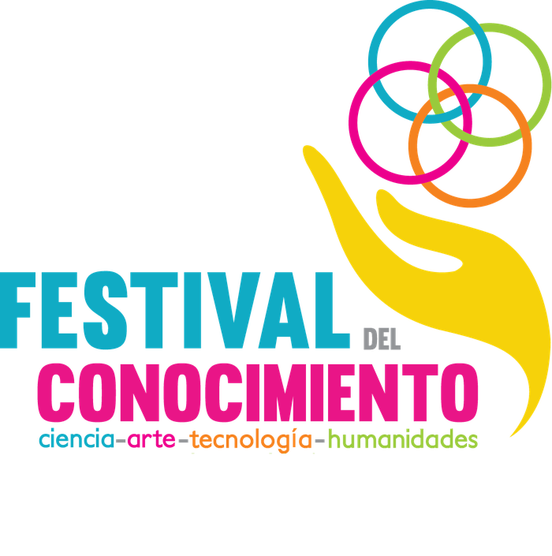

1724
octubre
2026
Festival del Conocimiento 2026 — Ensenada, Baja California
El festival
El conocimiento,
puesto en tus manos
Cada octubre, el Centro de Nanociencias y Nanotecnología de la UNAM y más de veinte instituciones de Ensenada abren la ciudad al saber: conferencias, talleres, conciertos, teatro y caminatas del conocimiento, gratuitos y para todas las edades. Cuatro ejes, un mismo propósito: que el conocimiento sea de todos.
-
Ciencia
Charlas de divulgación, laboratorios abiertos, astronomía, nanociencia y el placer de preguntar por qué.
Ver actividades → -
Arte
Teatro, danza, conciertos, exposiciones e intervenciones artísticas en espacios públicos.
Ver actividades → -
Tecnología
Talleres prácticos, innovación, emprendimiento y demostraciones que se tocan, se arman y se prueban.
Ver actividades → -
Humanidades
Mesas de diálogo, historia, filosofía, literatura y las conversaciones que nos ayudan a vivir juntos.
Ver actividades →
Sedes
El festival
ocupa la ciudad
No hay un solo recinto: el festival se reparte por los espacios culturales, académicos y públicos de Ensenada. Cada actividad del programa indica su sede y su horario.
Las sedes aparecen aquí conforme se publica cada actividad. Consulta el programa completo.
Cómo asistir
Entrada libre.
Algunas piden boleto.
Todo el festival es gratuito. Las actividades con cupo limitado piden un boleto, también gratuito, que se consigue desde el programa en un minuto y llega a tu teléfono.
-
Elige en el programa
Explora por día, eje o sede. Cada actividad dice si la entrada es libre o si pide boleto o confirmación.
-
Consigue tu boleto
Nombre y teléfono bastan. Recibes un código QR que se guarda en este mismo navegador, sin cuenta ni contraseña.
-
Llega y muéstralo
En la entrada se lee tu código. Si una actividad se agota, puedes anotarte en lista de espera y pasas primero si sobran lugares.
Memoria
Así se vive
el festival
En 2025 celebramos la décima edición bajo el eje «Talento de la Región»: caminatas del conocimiento, Euphoria Brass Band, cien años de mecánica cuántica, teatro de sombras, mesas de diálogo y el cierre con Son del Puerto. Once años de encuentros entre la comunidad científica, artistas, estudiantes y familias.
Cartelera 2025
Da clic en cualquier cartel para verlo completo.